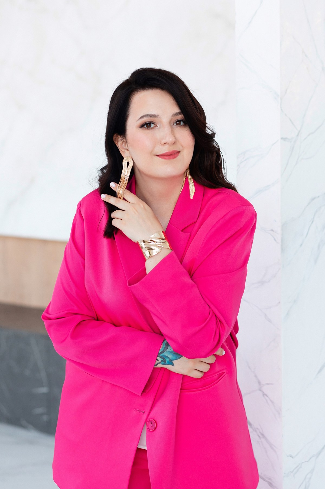

Мария Зайченко
Перманентный макияж
и удаление татуажа

Примеры работ
Услуги и цены
Предварительные цены — уточните при записи.
Перманентный макияж
Микроблейдинг бровей15 000 ₽
Пудровое напыление бровей15 000 ₽
Акварельные губы15 000 ₽
Стрелки15 000 ₽
Межресничка15 000 ₽
Коррекция через 1–2 месяца7 500 ₽
Обновление моей работыЧерез 3–18 месяцев12 000 ₽
Удаление
Татуаж · лазерЗа сеанс5 000 ₽
Татуаж · ремуверЗа сеанс3 000 ₽
Татуировка · лазерЗа сеансот 2 000 ₽
Брови и ресницы
Архитектура и окрашивание бровей2 000 ₽
Все дополнительные услуги +
Вельвет ресниц3 500 ₽
Вельвет бровей3 000 ₽
Окрашивание ресниц500 ₽
Снятие нарощенных ресниц400 ₽